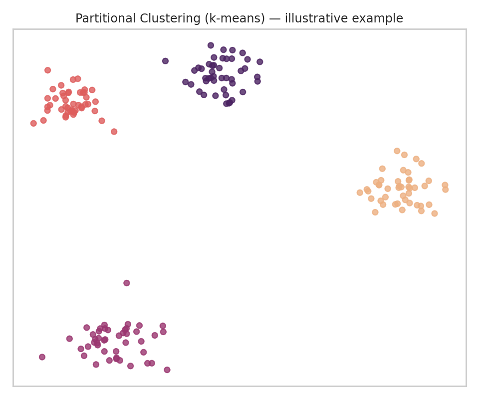
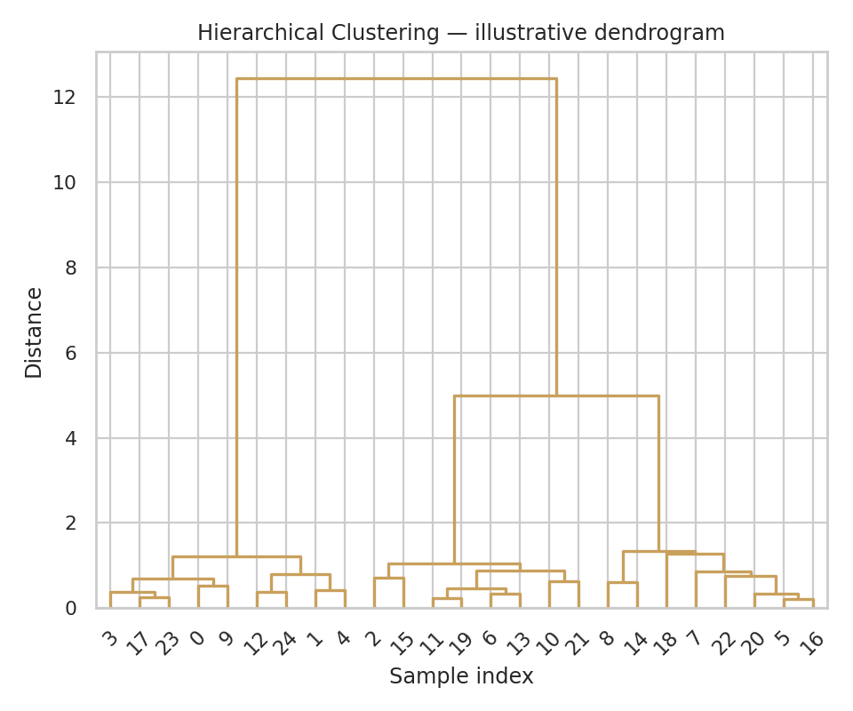
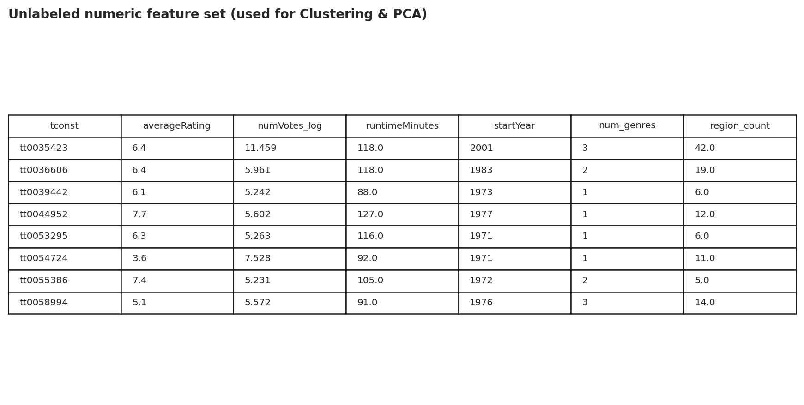
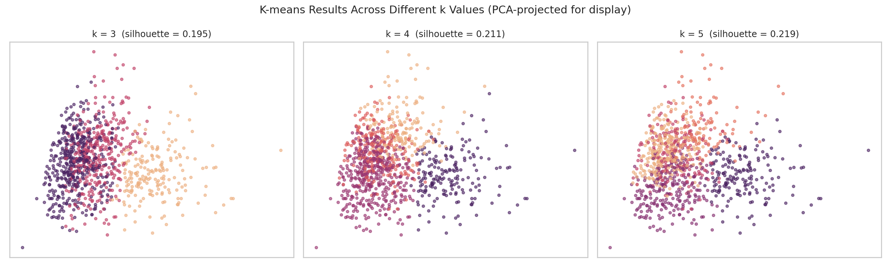
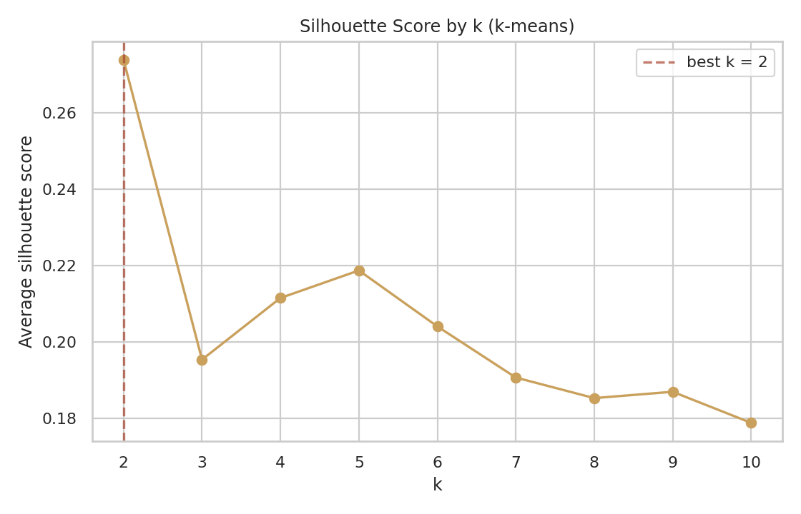
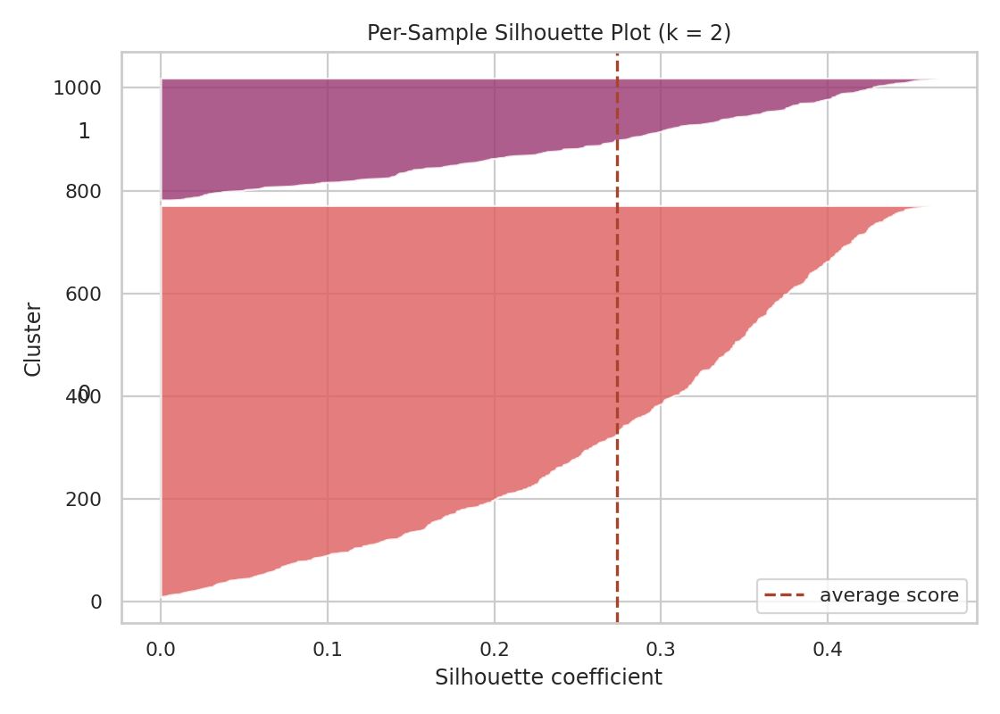
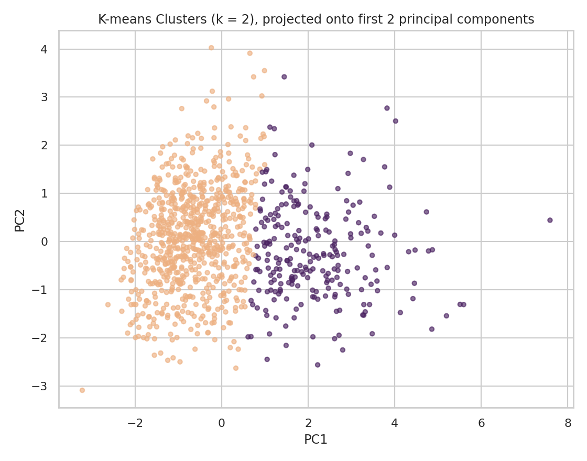
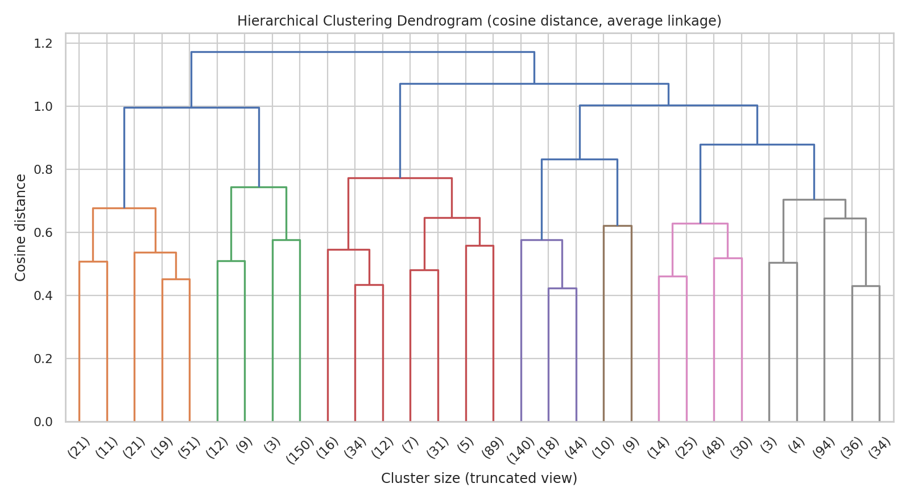
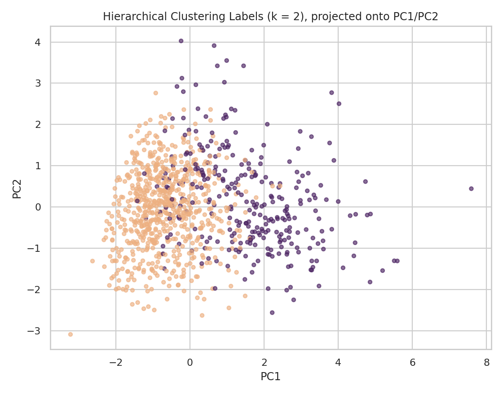

Section 03
Clustering
Using unsupervised clustering to look for natural structural groupings among films — without telling the algorithm what those groups should look like in advance.
(a) Overview
Clustering is an unsupervised learning technique that groups data points based on similarity, without using any predefined labels. The algorithm is only given the numeric features describing each item; it has no notion of a "correct" grouping and instead organizes the data based purely on how close or far points sit from each other in feature space.
There are two broad families of clustering approaches. Partitional clustering (most commonly k-means) divides the data into a fixed number of non-overlapping groups, k, chosen in advance, by iteratively assigning each point to its nearest cluster center and then recalculating those centers until the assignments stabilize. Hierarchical clustering instead builds a nested tree of groupings — starting with every point as its own cluster and successively merging the closest pairs (an "agglomerative" or bottom-up approach) until everything belongs to one cluster — with no need to decide k up front. The resulting tree, called a dendrogram, can be "cut" at different heights to produce different numbers of clusters after the fact.
Both approaches depend on a chosen distance metric to define "closeness." Common choices include Euclidean distance (straight-line distance, the default for k-means), Manhattan distance (sum of absolute coordinate differences), and cosine similarity/distance (which measures the angle between two feature vectors rather than their magnitude — useful when the overall scale of a data point matters less than its relative proportions). This project uses standard Euclidean distance for k-means and cosine distance for hierarchical clustering, as required.
Applied here, clustering is used purely for discovery — not prediction. The goal is to see whether films naturally fall into distinct structural "types" based on measurable attributes (runtime, genre count, release era, international reach, and audience engagement volume) with no rating-prediction target involved. If coherent clusters emerge, that's evidence these structural attributes carry real organizing signal; if they don't, that's an informative result too.


Both illustrations above use small synthetic examples purely to show how each method organizes data — not the movie dataset itself.
(b) Data Prep
Clustering requires only unlabeled, numeric data — no text fields, no row identifiers
used as inputs, and no target/label column, since the entire point is to let the algorithm discover
structure on its own rather than fit it to a known answer. Six numeric features were engineered from the
cleaned movie dataset for this purpose: averageRating, numVotes (log-transformed,
since raw vote counts are heavily right-skewed), runtimeMinutes, startYear,
num_genres, and region_count (the number of distinct international regions a
title was released in, from the EDA tab's akas data). All six were standardized (zero mean, unit variance)
before clustering, since k-means and cosine-distance methods are both sensitive to the relative scale of
input features.

Missing — add assets/unsupervised-data-sample.png')">This same prepared feature set is used for both the Clustering and PCA tabs, since both methods require the same kind of input.
Link to the data sample: data/unsupervised_features.csv (a derived, numeric-only dataset — original IMDb text fields and titles are not redistributed, consistent with IMDb's non-commercial data license).
(c) Code
Full script: scripts/clustering.py
# K-MEANS — partitional clustering, Euclidean distance (sklearn default)
from sklearn.cluster import KMeans
from sklearn.preprocessing import StandardScaler
from sklearn.metrics import silhouette_score
X_scaled = StandardScaler().fit_transform(X) # X = the 6 numeric features
for k in [3, 4, 5]:
km = KMeans(n_clusters=k, random_state=42, n_init=10).fit(X_scaled)
print(k, silhouette_score(X_scaled, km.labels_))
# HIERARCHICAL CLUSTERING — cosine distance, average linkage
from scipy.cluster.hierarchy import dendrogram, linkage
from scipy.spatial.distance import pdist
from sklearn.cluster import AgglomerativeClustering
cosine_dist = pdist(X_scaled, metric="cosine")
Z = linkage(cosine_dist, method="average")
dendrogram(Z, truncate_mode="lastp", p=30)
hclust = AgglomerativeClustering(n_clusters=k, metric="cosine", linkage="average").fit(X_scaled)
(d) Results
Because cosine-distance hierarchical clustering requires a full pairwise distance matrix (which does not scale to tens of thousands of rows), both k-means and hierarchical clustering below were run on the same subsample of 1,000 movies — the same subsample for both algorithms, so the comparison between them is a fair, matched one.
K-means at three different k values

Silhouette analysis — finding the "best" k


K-means clusters, visualized (non-dendrogram)

Hierarchical clustering — dendrogram

Hierarchical clusters, visualized — comparison to k-means
